Feature Definitions¶
This document describes the logic used for determining what type (if any) of feature each node represents.
1. Crossing / Kreuzung¶
When two lines cross each other.
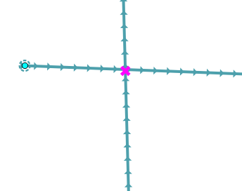
2. Pseudo node / Pseudonode¶
A node that has one upstream and one downstream node. The node is superfluous as it can be represented by one line instead of two.
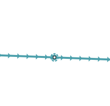
3. Well / Quelle¶
A node that has one upstream node and zero downstream nodes.
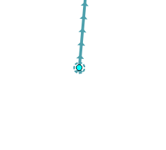
4. Sink / Senke¶
A node that has no upstream node and one or more downstream nodes.
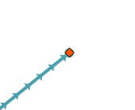
5. Watershed / Top¶
A node that has more than one upstream node and zero downstream nodes.
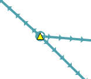
6. Unseparated / Ungetrennter¶
Only one upstream node or only one downstream node and intersects with one or more other lines. Note that in the lines below, there is only one node under the star, the other line has no node at the position of the star.
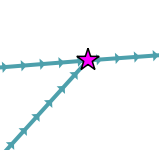
7. Unclear bifurcation / Unklare Bifurkation¶
It has more than one upstream and more than one downstream node, but the number of upstream and downstream nodes are same.
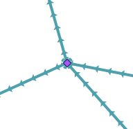
8. Tributary, Branch / Verzweigung¶
It has more upstream nodes than downstream nodes. The minimum number of downstream nodes is one.
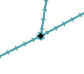
9. Confluence / Zusammenfluss¶
It has more downstream nodes than upstream nodes. The minimum number of upstream nodes is one.
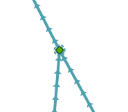
10. Segment Center / Segmentmitte¶
Segment center is the linear center of a line. The tool finds the point in the line that has distance half of the length of the line.
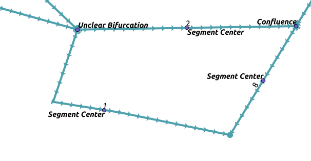
11. Self Intersection / Selbstkreuzung¶
Same with intersection, but this time the line intersects with itself.
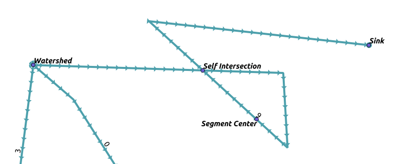